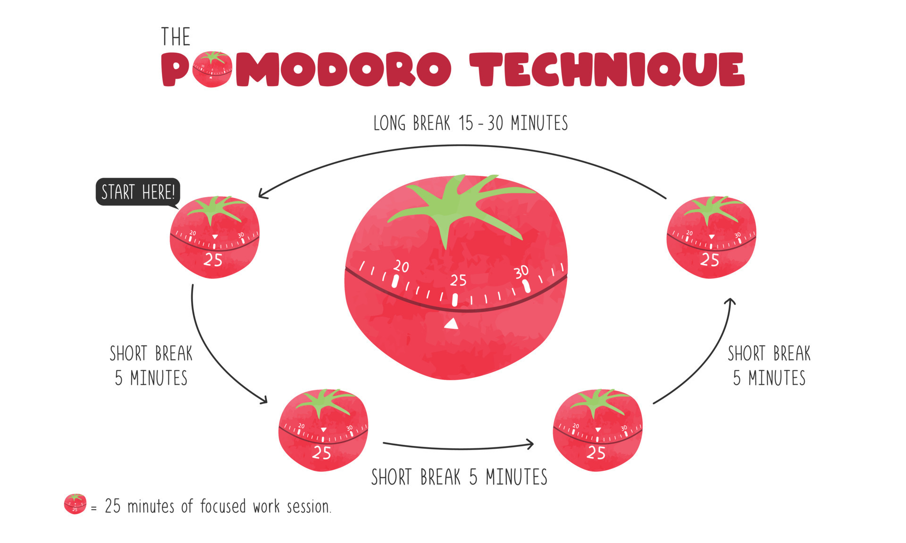

2
Pomodoro Power: Harnessing the 25/5 Method

Overview of the Technique
The Pomodoro Technique is a time-management method that advocates 25 minutes of deep, focused work followed by a 5-minute break. This cycle helps maintain high levels of concentration while providing necessary intervals for rest and rejuvenation. Studies suggest that these short breaks can help prevent mental fatigue and boost overall productivity.
Popular Pomodoro Timers
Discover tools that simplify your Pomodoro sessions:
- Focus Booster: A user-friendly app that tracks your timed sessions, offers detailed reports, and helps you manage your workday effectively. Visit Focus Booster at www.focusboosterapp.com.
- Marinara Timer: A simple, web-based timer that allows customization of Pomodoro intervals and breaks, perfect for quick adjustments. Visit Marinara Timer at www.marinaratimer.com.
User Guides & How-to Articles
Start your Pomodoro journey with our step-by-step guides:
- Setting up your Pomodoro sessions for maximum efficiency.
- Customizing intervals to match your unique work style.
- Integrating the Pomodoro Technique into your daily routine.
For more detailed articles, visit our Resources page.

Interactive Pomodoro Timer
25:00